에너지관리산업기사 (2002-05-26 기출문제)
1과목: 열역학 및 연소관리
1. 보일러 내의 압력을 대기압 이하로 낮추어 운전하는 경우가장 적절한 통풍 방법은?
- 압입통풍
- 흡입통풍
- 평형통풍
- 자유통풍
(정답률: 56%)

2. 다음 가스연료중에서 가장 가벼운 것은?
- 일산화탄소
- 프로판
- 아세틸렌
- 메탄
(정답률: 68%)
3. 다음 기체연료중에서 저위발열량이 가장 큰 것은?
- H2
- CH4
- C3H8
- C4H10
(정답률: 57%)
4. 다음 중 공기과잉계수가 가장 적은 연료는?
- 무연탄
- 갈탄
- 가스류
- 유류
(정답률: 58%)
5. 다음 중 이론연소온도(화염온도) t℃를 구하는 식은? (단, Hh : 고발열량, Hℓ : 저발열량, GT : 연소가스, CP : 비열)(오류 신고가 접수된 문제입니다. 반드시 정답과 해설을 확인하시기 바랍니다.)
- t =Hℓ/GT Cp
- t =Hh/GT Cp
- t =GT Cp/Hℓ
- t =GT Cp/Hh
(정답률: 42%)
6. 중유 버너 연소에 있어서의 중유의 무화방법으로서 잘못된 것은?
- 금속판에 연료를 고속으로 충돌시키는 방법
- 가열에 의해 가스화 하는 방법
- 압축공기를 사용하는 방법
- 원심력을 사용하는 방법
(정답률: 64%)
7. 단위 부피당 직경 1μm 입자가 1000개, 10μm 입자가 10개 섞여 있는 유체가 집진장치를 거쳐 직경 1μm 입자 500개, 10μm 입자 1개가 있는 유체로 변화하였을 때 집진효율은?
- 50.4%
- 53.6%
- 70.7%
- 86.4%
(정답률: 43%)
8. 중유중에 수분이 혼입되는 과정이라고 볼 수 없는 것은?
- 정제과정에
- 사용중에
- 수송중에
- 저장중에
(정답률: 66%)
9. 다음 설명중 매연의 방지조치로서 부적당한 것은?
- 무리하게 불을 피우지 않도록 한다.
- 통풍을 많게 하여 충분한 공기를 주도록 한다.
- 보일러에 적합한 연료를 선택한다.
- 연소실내의 온도가 내려가지 않도록 공기를 적게 보낸다.
(정답률: 78%)
10. CO2 20kg을 100℃에서 500℃까지 가열하는데 필요한 열량은 몇 kcal인가? (단, CO2의 평균분자 열용량은 7.6 kcal/kg-mole℃이다.)(오류 신고가 접수된 문제입니다. 반드시 정답과 해설을 확인하시기 바랍니다.)
- 1987
- 2828
- 5067
- 9547
(정답률: 50%)
11. 프로판가스 1Nm3를 공기비 1.1의 공기로 완전연소시키려고 한다. 소요공기량은 몇 Nm3인가?
- 26.2
- 29.0
- 32.2
- 35.4
(정답률: 50%)
12. 다음 연료중에서 연소중에 매연이 가장 잘 생기는 것은?
- 석유
- 프로판
- 중유
- 타아르
(정답률: 73%)
13. (CO2)max= 18.8%, (CO2) = 14.2%, (CO) = 3.0%일 때 연소가스 중의 (O2)는 몇 %인가?(오류 신고가 접수된 문제입니다. 반드시 정답과 해설을 확인하시기 바랍니다.)
- 1.91
- 3.23
- 4.33
- 5.43
(정답률: 41%)
14. 연소시 배기가스중의 질소산화물의 함량을 줄이는 방법중 적당하지 않은 것은?
- 염소 온도를 낮게 한다.
- 질소함량이 적은 연료를 사용한다.
- 연돌을 높게 한다.
- 연소가스가 고온으로 유지되는 시간을 짧게 한다.
(정답률: 67%)
15. 황(S) 4kg을 이론공기량으로 완전연소시켰을 때 발생하는 연소가스량(Nm3)은?
- 3.33
- 6.66
- 11 .66
- 13.33
(정답률: 65%)
16. 탄소 C kg을 완전연소시키는데 필요한 공기량은 얼마가 되는가?
- (1/0.21)×22.4C
- (1/0.21)×(22.4/12)C
- (1/0.21)×(22.4/6)C
- (1/0.21)×(22.4/24)C
(정답률: 71%)
17. 다음 중 석탄을 분류하는 방법으로 틀린 것은?
- 형상
- 점결성
- 발열량
- 입도
(정답률: 65%)
18. 다음 중 발열량(kcal/kg)이 가장 큰 연료는?
- 휘발유
- 등유
- 경유
- 중유
(정답률: 61%)
19. 폐유 소각로에 가장 알맞는 버너는?
- 로터리 버너
- 증기분사식 버너
- 공기분사식 버너
- 유압식 버너
(정답률: 49%)
20. 40atmㆍabs 27℃에서 600ℓ 의 용기에 산소(O2)가 들어 있다. 이 때 산소는 몇 kg이 충전되어 있는가? (이 조건에서 산소는 이상기체라고 한다.)
- 34.31kg
- 15.61kg
- 407.2kg
- 31.2kg
(정답률: 26%)
2과목: 계측 및 에너지진단
21. 다음 중 몰리에 선도로 부터 과열증기 영역에서 기울기가 대체로 비슷한 경향을 나타내어 정확한 교점을 찾기가 곤란하다고 판단되는 것은?
- 등온선과 등압선
- 등비체적과 등엔트로피선
- 등비체적과 포화증기선
- 등엔탈피선과 등엔트로피선
(정답률: 66%)
22. 단열과정에 있어서 엔트로피의 변화로서 가장 알맞는 내용은? (단, 완전기체이며, 단열에는 가역, 비가역이 있다.)
- 증가한다.
- 일정하다.
- 감소한다.
- 증가할 수도 일정할 수도 있다.
(정답률: 52%)
23. 공기 표준 브레이튼사이클에 대한 설명으로 틀린 것은?
- 등엔트로피 과정과 정압과정으로 이루어진다.
- 가스터빈에 대한 이상적인 사이클이다.
- 효율은 압력비에 의해 결정된다.
- 일이 최대가 되는 압력비를 구할 수 없다.
(정답률: 64%)
24. 다음 가스 중 가스상수(kJ/kgㆍK)가 가장 작은 것은?
- O2
- N2
- CO2
- H2
(정답률: 59%)
25. 완전가스 5㎏이 350℃에서 150℃까지 PV1.3 = 상수에 따라 변화하였다. 엔트로피의 변화는 몇 ㎉/K가 되는가? (단, 이 가스의 정적비열은 0.156㎉/㎏℃이고, 단열지수 k는 1.4 이다.)
- 0.406
- 0.365
- 0.2⑤
- 0.101
(정답률: 33%)
26. 터빈의 복수기(응축기) 압력이 낮으면 열효율은 어떻게 되는가?
- 증가한다.
- 감소한다.
- 불변이다.
- 알 수 없다.
(정답률: 76%)
27. 물의 기화열은 1기압에서 539cal/g이다. 1기압하에서 포화수 1g을 포화수증기로 만들 때 엔트로피의 변화는?
- 0cal/K
- 5.39cal/K
- 3.97cal/K
- 1.45cal/K
(정답률: 28%)
28. 이상기체에 대하여 절대일과 공업일(개방계의 일)에 대한 설명으로 틀린 것은?
- 절대일은 ∫pdv 이다.
- 공업일은 ∫vdp 이다.
- 절대일과 공업일은 항시 다른 값을 갖는다.
- 절대일에서 공업일을 뺀 값은 엔탈피 변화에서 내부에너지 변화를 뺀 값과 같다.
(정답률: 67%)
29. 그림과 같은 사이클에 대한 이론열효율의 표현식으로 옳은 것은? (단, K는 비열비로서 Cp/Cv이다.)
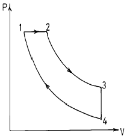
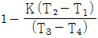
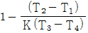
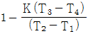
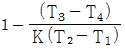
(정답률: 55%)
30. 공기 표준 사이클에 대한 가정에 해당되지 않는 것은?
- 공기는 밀폐시스템을 이루거나 정상 상태유동에 의해 사이클로 구성한다.
- 공기는 이상기체이고 대부분의 경우 비열은 일정한 것으로 간주한다.
- 연소과정은 고온 열원에서의 열전달과정으로, 배기과정은 저온열원으로의 열전달로 대치된다.
- 각 과정은 가역 또는 비가역 과정이며 운동에너지와 위치에너지는 무시된다.
(정답률: 76%)
31. 습증기를 단열 압축시키는 경우에 대한 설명으로 가장 적당한 것은?
- 압력과 온도는 변화하지 않는다.
- 압력은 상승하며 온도는 변화하지 않는다.
- 압력과 온도가 상승하여 과열증기가 된다.
- 압력은 상승하고 온도는 강하되어 압축 액체가 된다.
(정답률: 60%)
32. 기체가 가역 단열팽창할 때와 가역 등온팽창할 때 이들 중에서 내부에너지의 감소는?
- 같다.(변화가 없다.)
- 알 수 없다.
- 등온팽창 때가 크다.
- 단열팽창 때가 크다.
(정답률: 61%)
33. 공기 1 kg이 온도 27℃로부터 300℃까지 가열되며, 이 때 압력이 400 kPa에서 300 kPa로 강하시키는 경우의 엔트로피 변화량은 몇 kJ/kgㆍK인가? (단, 공기의 정압비열은 1.0⑤kJ/kgㆍK이며, 공기에 대한 가스 상수는 0.287kJ/kgㆍK이다.)
- 0.362
- 0.533
- 0.733
- 0.957
(정답률: 49%)
34. 다음 중 절대온도 T, 압력 P로 표시되는 단열과정에 대한 식으로 올바른 것은? (단, k = Cp/Cv)
- TPk-1 = C
- TPk = C
- TP(k+1)/k = C
- TP(1-k)/k = C
(정답률: 66%)
35. 다음 중에서 정적과정, 정압과정 및 단열과정으로 구성된 사이클은?
- 카르노사이클
- 디젤사이클
- 브레이턴사이클
- 오토사이클
(정답률: 68%)
36. 다음은 과열도가 대단히 높은 과열증기에 대한 설명이다. 옳은 내용은?
- 이 증기의 등온선은 건포화증기선을 지나면 대체로 직각 쌍곡선과 유사한 형태로 나타난다.
- P-V 평면상에서 이 상태의 증기는 임계점 이하에 있다.
- 이 증기의 건도는 80-90%이다.
- 이 증기의 온도는 임계온도보다 낮다.
(정답률: 57%)
37. 어떤 가역 열기관이 300℃에서 400kcal의 열을 흡수하여 일을 하고, 50℃에서 열을 방출한다고 한다. 이 때 열기관이 한 일은 몇 kcal인가?
- 134
- 154
- 175
- 194
(정답률: 49%)
38. 디젤기관의 열효율은 압축비 ε, 차단비 σ와 어떤 관계가 있는가?
- ε와 σ가 클수록 열효율이 증가한다.
- ε와 σ가 적을수록 열효율이 증가한다.
- ε가 감소하고, σ가 클수록 열효율이 증가한다.
- ε가 증가하고, σ가 작을수록 열효율이 증가한다.
(정답률: 83%)
39. 200℃의 증기가 400kcal/kg의 열을 받으면서 가역, 등온과정으로 팽창한다. 이 때의 엔트로피의 변화는?
- 변화가 없다.
- 감소한다.
- 0.85kcal/kgㆍK만큼 증가한다.
- 2kcal/kgㆍK만큼 증가한다.
(정답률: 60%)
40. 다음 중 열과 일에 대한 설명으로 틀린 것은?
- 모두 경계를 통해 일어나는 현상이다.
- 모두 경로함수 이다.
- 모두 불완전 미분형을 갖는다.
- 모두 양수의 값을 갖는다.
(정답률: 73%)
3과목: 열설비구조 및 시공
41. 차압식 유량계의 압력손실의 크기를 바르게 표기한 것은
- Flow-Nozzle ＞ Venturi ＞ Orifice
- Venturi ＞ Flow-Nozzle ＞ Orifice
- Orifice ＞ Venturi ＞ Flow-Nozzle
- Orifice ＞ Flow-Nozzle ＞ Venturi
(정답률: 72%)
42. 보일러내의 온도를 재는데 적당치 않은 계기는?
- 열전대 온도계
- 압력 온도계
- 저항 온도계
- 건습구 온도계
(정답률: 74%)
43. 다음 중 불연속 동작은?
- ON-OFF동작
- P동작
- D동작
- I동작
(정답률: 85%)
44. 다음 중 밸로우즈 압력계에 대한 설명 가운데 옳지 않은 것은?
- 정도는 ± 1 ~ 2% 이다.
- 벨로우즈 재질은 인청동이 사용된다.
- 측정압력 범위는 0.1 ~ 5㎏/cm2 정도이다.
- 벨로우즈 압력에 의한 신축을 이용한 것이다.
(정답률: 60%)
45. 자동제어장치에서 조절계의 종류에 속하지 않는 것은?
- 공기식
- 유압식
- 전기식
- 수압식
(정답률: 69%)
46. 다음 중 보일러 연소가스의 통풍계로 사용되는 것은?
- 분동식 압력계
- 다이아프램식 압력계
- 부르돈(Bourdon)관 압력계
- 벨로우즈압력계
(정답률: 64%)
47. 보일러 출구에 설치된 O2분석기를 통하여 배기가스의 O2%를 제어하려고 한다. 이때 보일러 부하에 따라 다른 수치의 O2%의 값을 제어하려면?
- 시이퀀스제어
- 피이드백제어
- 케스케이드제어
- 다위치제어
(정답률: 73%)
48. 다음 중 측온 저항체에 속하지 않는 것은?
- 백금 측온 저항체
- 동 측온 저항체
- 실리콘 측온 저항체
- 비금속 측온 저항체
(정답률: 56%)
49. 잔류편차로 인해 단독으로 사용하지 않고 다른 동작과 결합시켜 사용되는 것은?
- D 동작
- P 동작
- I 동작
- 2위치동작
(정답률: 78%)
50. 다음 중 공업 계측용으로 가장 적합한 온도계는?
- 유리 온도계
- 압력 온도계
- 열전대 온도계
- 방사 온도계
(정답률: 80%)
51. 다음 중 연속 측정을 할 수 없는 분석계는?
- 열전도형분석계
- 오르쟈트분석계
- 세라믹분석계
- 도전율식분석계
(정답률: 55%)
52. 프로세스 제어(Proess control)의 난이정도를 표시하는 값으로 L(dead time)과 T(time Constant)의 비(ratio), 즉 L/T이 사용되는데 이 값이 작을 경우 어떠한가?
- P동작 조절기를 사용한다.
- PD동작 조절기를 사용한다.
- 제어가 쉽다.
- 제어가 어렵다.
(정답률: 63%)
53. 보일러에 사용되는 전자밸브(solenoid valve)의 동작은 어떤 방식인가?
- 비례동작
- 미분동작
- 2위치동작
- 간헐동작
(정답률: 68%)
54. 다음 중 화학적 가스분석계가 아닌 것은?
- 오르쟈트식
- 연소식
- 자동화학식 CO2 계
- 밀도식
(정답률: 72%)
55. 그림과 같은 블럭선도로부터 전달 함수G(s)를 옳게 표기한 것은?
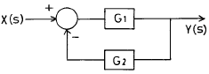
- G1/(G1+G2)
- G2/(G1+G2)
- G1/(1+G1G2)
- G2/(1+G1G2)
(정답률: 60%)
56. 대칭 2원자 분자 및 Ar 등의 단원자를 제외하고는 거의 대부분 가스를 분석할 수 있는 가스분석 방법은?
- 적외선 흡습법
- 도전율법
- 열전도율법
- 밀도법
(정답률: 54%)
57. 차압식 유량계에 대한 설명이다. 틀린 것은?
- 교축장치 통과시 유체의 상변화가 없어야 한다.
- 액체의 측정용으로는 좋으나 기체측정에는 적당하지 않다.
- 점도가 큰 유체의 측정시에는 오차가 발생한다.
- 레이놀즈수 105 이하에서는 유량계수가 변한다.
(정답률: 66%)
58. 지르코니아식 O2 측정기의 특징이 아닌 것은?
- 시료가스 유량이나 설치 장소 등의 주위 온도 변화에 영향이 없다.
- 자동제어 장치와 결속이 용이하다.
- 측정 범위가 넓고 응답속도가 빠르다.
- 온도 유지를 위한 전기 히터가 필요 없다.
(정답률: 71%)
59. 다음 식중 베르누이 방정식(Bernoulli equation)이 아닌 것은?
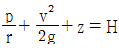
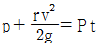
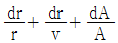
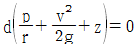
(정답률: 63%)
60. 부르돈관(Bourdon tube)에서 측정된 압력은 다음 중 어느 것인가?
- 절대압력
- 게이지압력
- 진공압
- 대기압
(정답률: 84%)
4과목: 열설비취급 및 안전관리
61. 관의 지름을 D, 유체의 밀도를 ρ, 정압비열을 Cp, 점도를 μ, 질량속도를 G, 열전도도를 K, 열전달계수를 h라고 할 때 다음 중 무차원이 되지 않는 것은?
- K/ρCp
- h/CpG
- Cpμ/K
- hD/K
(정답률: 41%)
62. 가마에서 가스 유량을 측정하는 기기가 아닌 것은?
- 오리피스 미터(Orifice meter)
- 오르자트(Orsat) 분석기
- 피토관(Pitot tube)
- 벤츄리 미터(Venturi meter)
(정답률: 69%)
63. 분진이 많은 배기가스의 열회수에 관한 설명으로 틀린 것은?
- 배기가스는 시멘트, 석회석 등의 소성로 및 황화광 배소로 등에서 배출되는 가스와 같이 다량의 분진 및 부식성을 함유한 것이다.
- 폐열회수 보일러의 출구 가스온도를 200℃ 이상으로 한다.
- 원료에 수분이 많은 경우에는 원료 가열에 사용할 경우도 있다.
- 분진이 많은 가스로부터 여열을 회수하는 보일러에서는 보일러 수관상에 분진이 축적되지 않는 형상이 필요 조건이다.
(정답률: 60%)
64. 프라이밍 및 포오밍 발생시의 조치를 열거한 것으로 가장 적당치 못한 것은?
- 안전밸브를 취출하여 압력을 강하시킨다.
- 수위가 출렁거리면 조용히 취출을 한다.
- 먼저 연소를 억제한다.
- 보일러 물을 조사한다.
(정답률: 59%)
65. 보일러 각부에 발생하는 주요한 응력에 관한 내용으로 틀린 것은?
- 노통에 발생하는 응력 : 압축응력
- 평경판에 발생하는 응력 : 압축응력
- 화실판에 발생하는 응력 : 압축응력
- 수관에 발생하는 응력 : 인장응력
(정답률: 60%)
66. 다음 중 동관의 공작에 소요되지 않는 기기는?
- 만능관 공작기
- 확관기
- 티뽑기
- 리이머
(정답률: 63%)
67. 다음 중 비철금속 용해로에 잘 쓰이지 않는 것은?
- 반사로
- 도가니로
- 유동층로
- 회전로
(정답률: 62%)
68. 저온 보온재의 부피 비중이 크면 클수록 열전도율은?
- 작아진다.
- 커진다.
- 일정하다.
- 증가하다 감소한다.
(정답률: 50%)
69. 가마의 축열 손실 산출식은? (단, W : 가마재료의 무게, C : 재료의 평균비열 t : 재료의 평균온도와 기준온도와의 차)
- WCt
- (W/C)ㆍt
- WCt2
- W/Ct2
(정답률: 53%)
70. 금속공업로의 에너지 절감대책 기본과제로서 공연비 개선의 일환으로 공기비 수정과 공기예열의 상승효과를 얻을 수 있는 식으로 적당한 것은? (단, 연료는 중유 1종 1호를 사용할 경우, ST = 전 절약율(%), Sp = 공기예열에 의한 절약율(%) SA = 공기비 수정에 의한 절약율(%), a = 리큐퍼레이터 등의 특성에 의한 계수(a≒1))
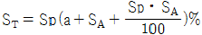
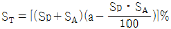
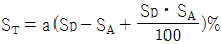
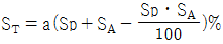
(정답률: 54%)
71. 서브머지드 아크용접법의 장점이 아닌 것은?
- 직류, 교류를 모두 쓸 수 있다.
- 열에너지 손실이 적고 용접속도가 수동에 비하여 10∼20배 정도 빠르다.
- 복잡한 용접선이나 필릿용접이 많이 쓰이는 구조물 용접에 용이하다.
- 용융 범위가 넓고 용입이 깊으며 비드 표면이 깨끗하다.
(정답률: 57%)
72. 풋셔형 3대식 연속 강재 가열로에서 강재가 가열되는 구간(대)으로서 생각할 수 없는 것은?
- 냉각대
- 예열대
- 가열대
- 균열대
(정답률: 63%)
73. 다음 중 보일러수에 관계되는 탄산염 경도에 관한 설명으로 틀린 것은?
- 물의 경도중 칼슘, 마그네슘의 중탄산염에 의한 경도이고, 끓게 한 경우에 의해서 침전을 제거할 때 일시경도라고도 부른다.
- 탄산염 경도는 물속의 Ca2+, Mg2+ 량을 나타내는 지수이다.
- 탄산염 경도와 비탄산염 경도가 있다.
- 전고형물중 여과해서 제거한 것을 현탁 고형물이라고 한다.
(정답률: 55%)
74. 열교환기 설계에서 열교환 유체의 압력강하는 중요한 설계인자이다. 관의 내경, 길이 및 평균유속을 Di, ℓ , U라 할 때 압력강하량 △P와 이들 사이의 관계식으로 옳은 것은?
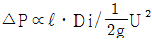
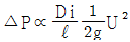
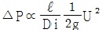
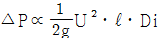
(정답률: 44%)
75. 다음 ( )안에 알맞는 내용은?
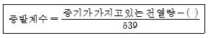
- 급수 보유 전열량
- 급수 1㎏이 보유한 잠열
- 가스중 연소가스의 열량
- 증기의 엔탈피
(정답률: 62%)
76. 급수중의 불순물이 직접 보일러의 과열의 원인으로 되는 것은?
- 탄산가스
- 중탄산염
- 산소
- 유지
(정답률: 77%)
77. 다음 중 층류와 난류의 유동상태 판단의 척도가 되는 무차원 수는?
- 마하 수
- 프란틀 수
- 넛셀 수
- 레이놀즈 수
(정답률: 85%)
78. 압력용기에서 축(세로)방향의 응력은 원주방향 응력의 몇배 정도인가?
- 0.5배
- 1.5배
- 2배
- 2.5배
(정답률: 48%)
79. 증기보일러의 전열면에서 벽의 두께는 22mm, 열전도율은 50kcal/mh℃이고 열전달율은 열가스 측이 18kcal/m2h℃, 물측이 5200kcal/m2h℃이다. 물측에 평균두께 3mm의 물때(열전도율 1.8kcal/mh℃)와 가스측에 평균두께 1mm의 그을음(열전도율 0.1kcal/mh℃)이 부착되어 있는 경우 열관류율은 몇 kcal/m2h℃인가? (단, 전열면은 평면)
- 11.7
- 14.7
- 25.3
- 28.7
(정답률: 56%)
80. 다음 중 보온재가 갖추어야 할 구비조건이 아닌 것은?
- 장시간 사용해도 사용온도에 견디어야 하며 변질되지 않을 것
- 어느 정도의 기계적 강도를 가질 것
- 열전도율이 작을 것
- 부피 비중이 클 것
(정답률: 78%)